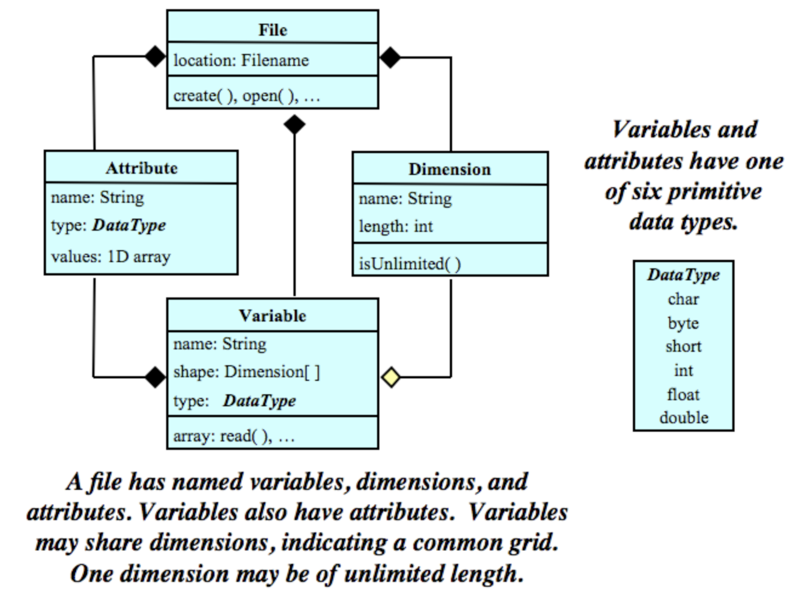

16 Raster data
Raster data is one of the two primary types of geospatial data (the other one being vector data). In this section we will review what raster data is and go over some common data formats for it.
16.1 Rasters
16.2 NetCDF Data Format
NetCDF (network Common Data Form) is a set of software libraries and self-describing, machine-independent data formats that support the creation, access, and sharing of array-oriented scientific data. NetCDF was initially developed at the Unidata Program Center and is supported on almost all platforms, and parsers exist for most scientific programming languages.
The NetCDF documentation outlines that this data format is desgined to be:
Self-describing: Information describing the data contents of the file is embedded within the data file itself. This means that there is a header describing the layout of the rest of the file and arbitrary file metadata.
Scalable: Small subsets of large datasets may be accessed efficiently through netCDF interfaces, even from remote servers.
Portable: A NetCDF file is machine-independent i.e. it can be accessed by computers with different ways of storing integers, characters, and floating-point numbers.
Appendable: Data may be appended to a properly structured NetCDF file without copying the dataset or redefining its structure.
Sharable: One writer and multiple readers may simultaneously access the same NetCDF file.
Archivable: Access to all earlier forms of NetCDF data will be supported by current and future versions of the software.
16.2.1 Data Model
The NetCDF data model is the way that NetCDF organizes data. This lesson will follow the Classic NetCDF Data Model, which is at the core of all netCDF files.
The model consists of three key components: variables, dimensions, and attributes.
Variables are N-dimensional arrays of data. We can think of these as varying/measured/dependent quantities.
Dimensions describe the axes of the data arrays. A dimension has a name and a length. We can think of these as the constant/fixed/independent quantities at which we measure the variables.
Attributes are small notes or supplementary metadata to annotate a variable or the file as a whole.

16.3 Acknowledgements
The NetCDF section in this lesson is adapted from the lesson I prepared for the Arctic Data Center’s course on scalable computing:
S. Jeanette Clark, Matthew B. Jones, Samantha Csik, Carmen Galaz García, Bryce Mecum, Natasha Haycock-Chavez, Daphne Virlar-Knight, Juliet Cohen, Anna Liljedahl. 2023. Scalable and Computationally Reproducible Approaches to Arctic Research. Arctic Data Center. doi:10.18739/A2QF8JM2V